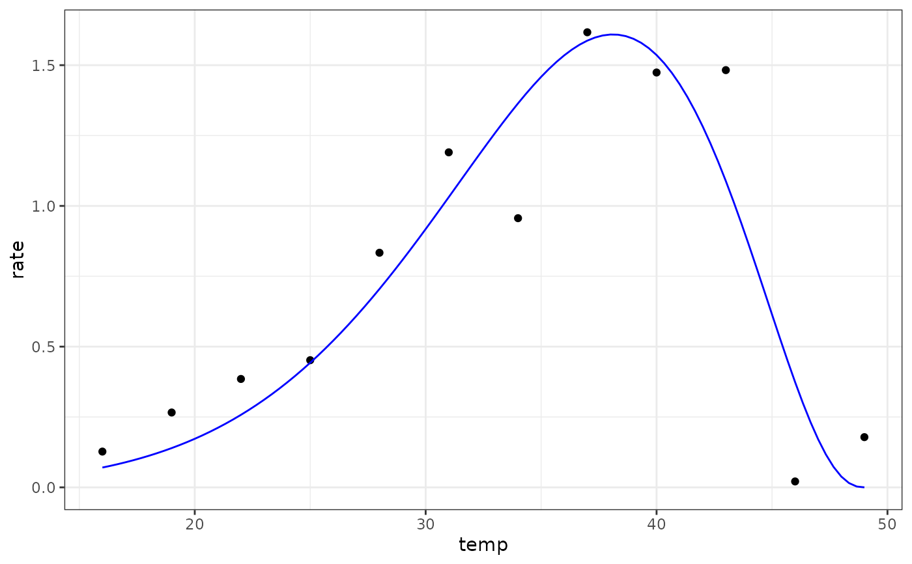

Simplified Extended Brière model for fitting thermal performance curves
Source:R/briereextendedsimplified_2021.R
briereextendedsimplified_2021.RdSimplified Extended Brière model for fitting thermal performance curves
Arguments
- temp
temperature in degrees centigrade
- tmin
low temperature (ºC) at which rates become negative
- tmax
high temperature (ºC) at which rates become negative
- a
scale parameter to adjust maximum rate of the curve
- b
shape parameter to adjust the asymmetry of the curve
- d
shape parameter to adjust the asymmetry of the curve
Value
a numeric vector of rate values based on the temperatures and parameter values provided to the function
Details
Equation: $$rate=a \cdot (temp - t_{min})^b \cdot (t_{max} - temp)^d$$
Start values in get_start_vals are derived from the data or sensible values from the literature.
Limits in get_lower_lims and get_upper_lims are derived from the data or based extreme values that are unlikely to occur in ecological settings.
References
Cruz-Loya, M. et al. Antibiotics shift the temperature response curve of Escherichia coli growth. mSystems 6, e00228–21 (2021).
Examples
# load in ggplot
library(ggplot2)
# subset for the first TPC curve
data('chlorella_tpc')
d <- subset(chlorella_tpc, curve_id == 1)
# get start values and fit model
start_vals <- get_start_vals(d$temp, d$rate, model_name = 'briereextendedsimplified_2021')
# fit model
mod <- nls.multstart::nls_multstart(
rate~briereextendedsimplified_2021(temp = temp, tmin, tmax, a, b, d),
data = d,
iter = c(4,4,4,4,4),
start_lower = start_vals - 10,
start_upper = start_vals + 10,
lower = get_lower_lims(d$temp, d$rate, model_name = 'briereextendedsimplified_2021'),
upper = get_upper_lims(d$temp, d$rate, model_name = 'briereextendedsimplified_2021'),
supp_errors = 'Y',
convergence_count = FALSE)
# look at model fit
summary(mod)
#>
#> Formula: rate ~ briereextendedsimplified_2021(temp = temp, tmin, tmax,
#> a, b, d)
#>
#> Parameters:
#> Estimate Std. Error t value Pr(>|t|)
#> tmin -3.901e+01 5.077e+02 -0.077 0.94089
#> tmax 4.900e+01 1.011e+01 4.845 0.00187 **
#> a 1.285e-35 1.004e-32 0.001 0.99901
#> b 1.726e+01 1.493e+02 0.116 0.91124
#> d 2.436e+00 7.452e+00 0.327 0.75329
#> ---
#> Signif. codes: 0 ‘***’ 0.001 ‘**’ 0.01 ‘*’ 0.05 ‘.’ 0.1 ‘ ’ 1
#>
#> Residual standard error: 0.2829 on 7 degrees of freedom
#>
#> Number of iterations to convergence: 56
#> Achieved convergence tolerance: 1.49e-08
#>
# get predictions
preds <- data.frame(temp = seq(min(d$temp), max(d$temp), length.out = 100))
preds <- broom::augment(mod, newdata = preds)
# plot
ggplot(preds) +
geom_point(aes(temp, rate), d) +
geom_line(aes(temp, .fitted), col = 'blue') +
theme_bw()
